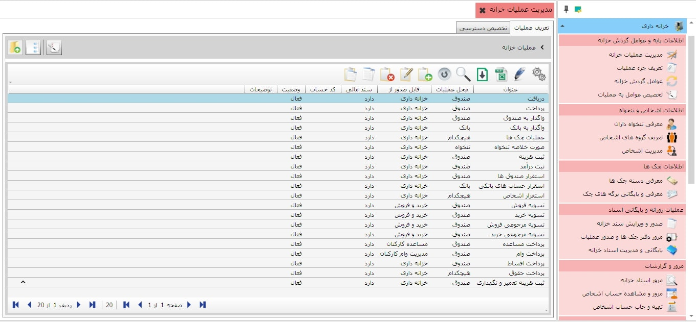
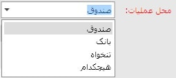
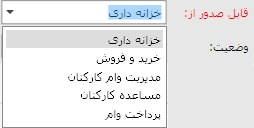
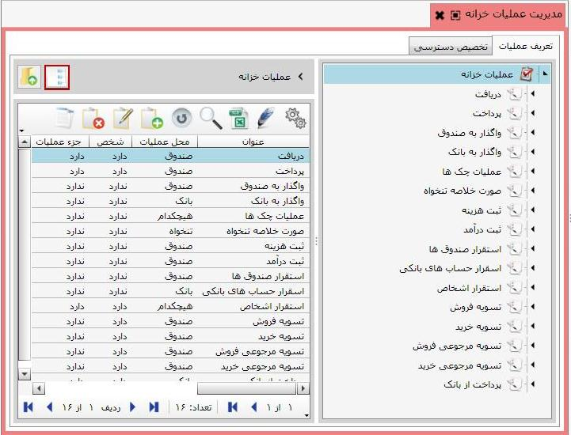
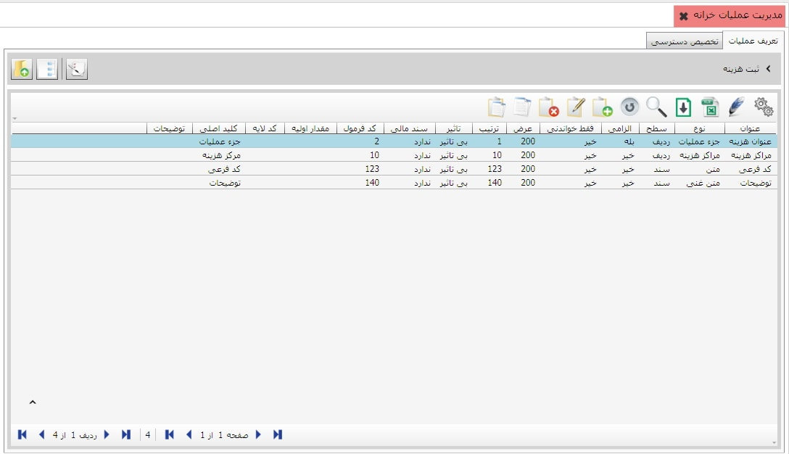
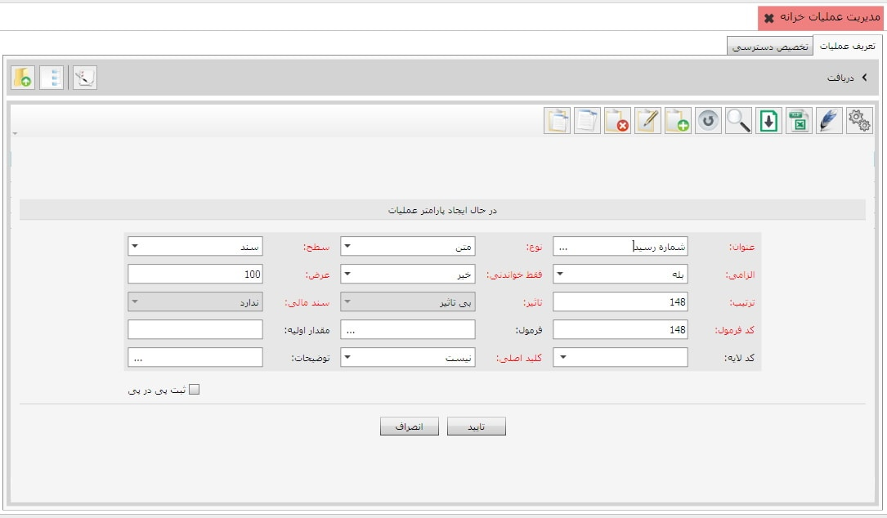
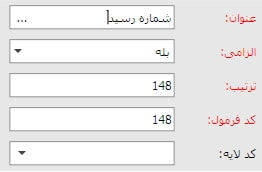
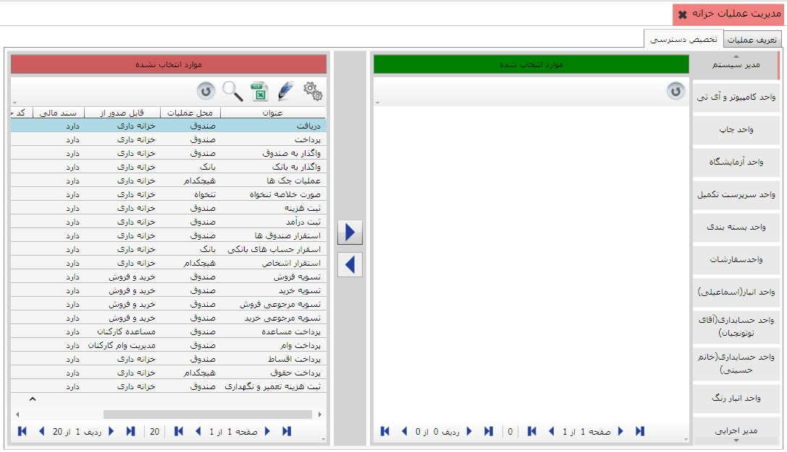

عملیات خزانه نظیر دریافت، پرداخت، ثبت هزینه، ثبت درآمد و ... در این بخش تعریف می شوند، همچنین در این بخش شما می توانید برای هر عملیات به تعداد دلخواه پارامتر تعریف کنید، برای صدور سند خزانه نیاز به تعریف عملیات و عوامل گردش خزانه داریم، برای این کار روی گزینه «مدیریت عملیات خزانه» از منوی اطلاعات پایه و عوامل گردش خزانه کلیک کنید تا صفحه مربوط به آن باز شود. در این صفحه دو تب با عناوین «تعریف عملیات» و «تخصیص دسترسی کاربر به عملیات» قرار دارد.

شما می توانید در هنگام ایجاد عملیات کد آن را به دلخواه خود مشخص کنید با این شرط که کدی که مشخص می کنید تکراری نباشد. این کد قابلیت ویرایش ندارد، یعنی پس از تایید فرم بالا دیگر نمی توانید کد عملیات ایجاد شده را تغییر دهید. در فیلد عنوان ، باید نام عملیات مورد نظرتان را وارد نمایید، برای مثال می توانید عملیات دریافت را ایجاد نمایید.
برای عملیات ایجاد شده باید محل عملیات را تعیین نمایید. محل عملیات بسته به نوع عملیات تعریف شده می تواند صندوق، بانک، تنخواه و یا هیچکدام از گزینه های موجود باشد.
عملیات تعریف شده در خزانه می تواند قابل صدور از هر یک از سیستم های خزانه داری (همچون عملیات دریافت، پرداخت، عملیات چک ها و ...)، خرید و فروش (مانند اسناد تسویه خرید، فروش و ...) و سیستم حقوق و دستمزد (مانند اسناد پرداخت وام و مساعده) باشد، بسته به نوع عملیات تعریفی می توانید این گزینه را انتخاب نمایید.

در فیلد کد حساب نیز در صورت نیاز می توانید معین مورد نظرتان را قرار دهید.

فیلد وضعیت را روی گزینه فعال قرار دهید، هر زمان که مایل بودید می توانید یک عملیات را غیر فعال کنید. عملیات غیر فعال در لیست عملیات ها در فرم صدور سند خزانه نخواهد آمد. در ادامه اگر توضیحات خاصی نیاز بود می توانید در فیلد توضیحات تایپ کنید و با تایید اطلاعات وارد شده، عملیات جدید را ثبت نمایید.
برای سهولت کار فایل آماده ای شامل عملیات عمومی
خزانه در سیستم قرار داده شده است که می توانید آن را خواندن از
فایل نمایید. برای این کار از سیستم خزانه داری،
آخرین منو با عنوان «صفحه تنظیمات خزانه داری» را انتخاب کنید و از
تب «اطلاعات پایه» گزینه
 را بزنید تا عملیات و عوامل خزانه در صفحه مدیریت عملیات خزانه قرار گیرد.
را بزنید تا عملیات و عوامل خزانه در صفحه مدیریت عملیات خزانه قرار گیرد.
پس از این کار عملیات خوانده شده از فایل مطابق شکل زیر با جزئیات در تب تعریف عملیات نمایش داده می شود.
هر عملیات می تواند چندین پارامتر داشته باشد، برای مشاهده پارامتر های عملیات کافی است روی عملیات مورد نظر دابل کلیک کنید. در صفحه ی زیر وارد عملیات ثبت هزینه شده ایم :
برای تعریف پارامتر جدید برای عملیات های مختلف، پس از ورود به عملیات مورد نظر، روی گزینه اضافه کلیک کنید تا صفحه مربوط به ایجاد پارامتر باز شود. در شکل زیر به عنوان مثال برای عملیات دریافت، پارامتری با عنوان شماره رسید ایجاد می کنیم:
برای ایجاد هر پارامتر نیازمند پر کردن فیلد هایی هستیم که در زیر به شرح آنها می پردازیم :

برای ایجاد پارامتر عملیات
ابتدا عنوان آن را در فیلد مربوطه تایپ کنید.
اگر فیلد الزامی
را خیر قرار دهیم در هنگام صدور سند خزانه تعیین مقدار پارامتر
اختیاری خواهد بود و اگر الزام را بله قرار دهید
در هنگام صدور سند خزانه باید پارامتر را معین کنید، در غیر این
صورت اجازه صدور سند خزانه داده نخواهد شد.
در صورتی که یک عملیات چند پارامتر داشته باشد، فیلد ترتیب، ترتیب قرار
گرفتن پارامترهای عملیات در ستون های فرم صدور سند خزانه را مشخص می
کند.
فیلد کد فرمول به صورت خودکار از سوی سیستم تعیین می شود
و بهتر است که در آن تغییری ایجاد نکنید.
در فیلد کد لایه در صورت نیاز می توانید لایه ی متناسب به پارامتر انتخابی
خود تخصیص دهید.
در فیلد نوع از لیست باز شده نوع پارامتر را انتخاب نمایید که در این مثال پارامتر از نوع عدد است.
فیلد فقط خواندنی اگر در حالت بله باشد باید یک مقدار اولیه برای آن ثبت کنید
و در این صورت هنگام ثبت سند خزانه در پارامتر ایجاد شده مقدار اولیه را مشاهده می کنید
و این مقدار قابل تغییر نیست، اما اگر در حالت خیر باشد هنگام ثبت سند خزانه می توانید
مقدار آن را ویرایش کنید.
فیلد تاثیر سه حالت دارد: بی تاثیر، افزاینده و کاهنده، اگر فیلد نوع را پول انتخاب کنید
در این صورت جایز به انتخاب افزاینده و کاهنده هستید، اگر پارامتر به گونه ای تعریف شده که
از مبلغ سند می کاهد کاهنده را انتخاب کنید، اگر پارامتر به گونه ای تعریف شده که به مبلغ سند می افزاید،
افزاینده را انتخاب کنید و اگر تاثیری بر مبلغ سند ندارد بی تاثیر را انتخاب کنید.
اگر پارامتری که تعریف می کنید نیاز به محاسبه داشته باشد در فیلد فرمول می توانید
نحوه ی محاسبه ی آن را تعریف کنید.
در فیلد کلید اصلی می توانید متناسب با پارامتری که تعریف کرده اید کلید اصلی را انتخاب کنید.
فیلد سطح دو حالت دارد سطح ردیف و سطح سند، اگر در حالت ردیف باشد هنگام صدور سند خزانه
خواهید دید که پارامتر در سطح ردیف سند ایجاد شده است اما اگر در سطح سند انتخاب شود پارامتر مورد
نظر در سطح سند ظاهر خواهد شد.
فیلد عرض، اندازه عرض ستون این پارامتر را در فرم صدور سند خزانه تعیین
می کند، این فیلد به صورت پیش فرض روی 100 قرار
دارد و شما می توانید ان را تغییر دهید.
فیلد سند مالی دو حالت دارد: دارد و ندارد، اگر دارد را انتخاب کنید به این مفهوم است
که برای پارامتر ایجادی باید سند مالی صادر شود، و اگر ندارد را انتخاب کنید به این مفهوم است
که پارمتر ایجادی سند مالی ندارد.
اگر در فیلد مقدار اولیه چیزی وارد کنید هنگامی که وارد بخش صدور و ویرایش سند خزانه می شوید
مقدار اولیه ای که برای پارامتر تعیین کرده اید را مشاهده خواهید کرد.
در فیلد توضیحات در صورت نیاز می توانید توضیحاتی ثبت کنید.
شما می توانید در سیستم خزانه داری سایان چند کاربر داشته باشید و علاوه بر این از قسمت مدیریت عملیات خزانه تعیین کنید که هر کاربر به کدام عملیات خزانه دسترسی داشته باشد. برای آن که بتوانید طبق عملیات تعریف شده سند خزانه صادر کنید، باید دسترسی های لازم را به کاربر مورد نظرتان بدهید. برای این کار به تب «تخصیص دسترسی» در صفحه «مدیریت عملیات خزانه» بروید تا شکل زیر ظاهر شود:

در شکل بالا مشاهده می کنید که
لیست کاربران در سمت راست تصویر وجود دارد
و کاربر مدیر سیستم در حالت انتخاب قرار
گرفته است. برای ایجاد دسترسی به کاربر کافی
است عملیات های مورد نظرتان را از جدول سمت چپ انتخاب نمایید و توسط
دکمه
 به جدول سمت چپ منتقل کنید تا به کاربر انتخاب شده تخصیص یابد.
به جدول سمت چپ منتقل کنید تا به کاربر انتخاب شده تخصیص یابد.
پس از انتقال عملیات به سمت راست و تخصیص
آن ها به کاربر مورد نظر که در شکل بالا کاربر حسابداری می باشد، مشاهده می
کنید که امکان ایجاد دسترسی برای هر
یک از فرآیندهای مشاهده، ایجاد، ویرایش، حذف و ... به تفکیک هر عملیات وجود
دارد. به این معنا که ممکن است یک کاربر
دسترسی به یک عملیات داشته باشد ولی تنها بتواند فرآیندهای محدودی برای آن
عملیات انجام دهد. به عنوان مثال در شکل بالا کاربر
حسابداری به عملیات دریافت دسترسی دارد ولی تنها می تواند فرآیند
ایجاد عملیات دریافت را انجام دهد و اسناد
ثبت شده را مشاهده نماید و دسترسی لازم برای ویرایش و حذف اسناد
دریافت ندارد.(گزینه های حذف،
ویرایش، تایید و ارسال را با کشیدن اسکرول به سمت چپ مشاهده میکنید)
با استفاده از این کلید  می توانید
هر یک از عملیات ها را از دسترس کاربر خارج نمایید.
می توانید
هر یک از عملیات ها را از دسترس کاربر خارج نمایید.